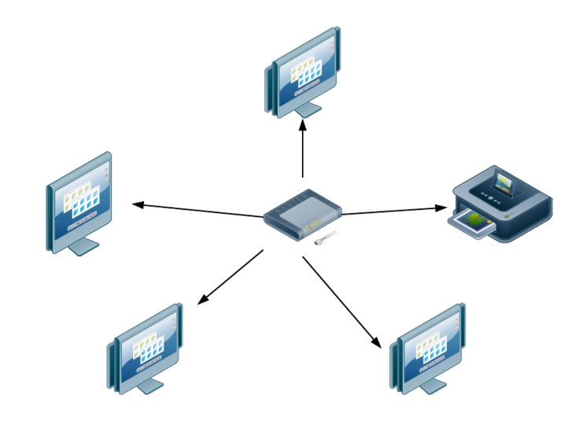
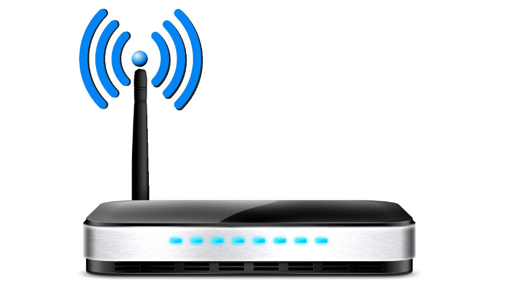
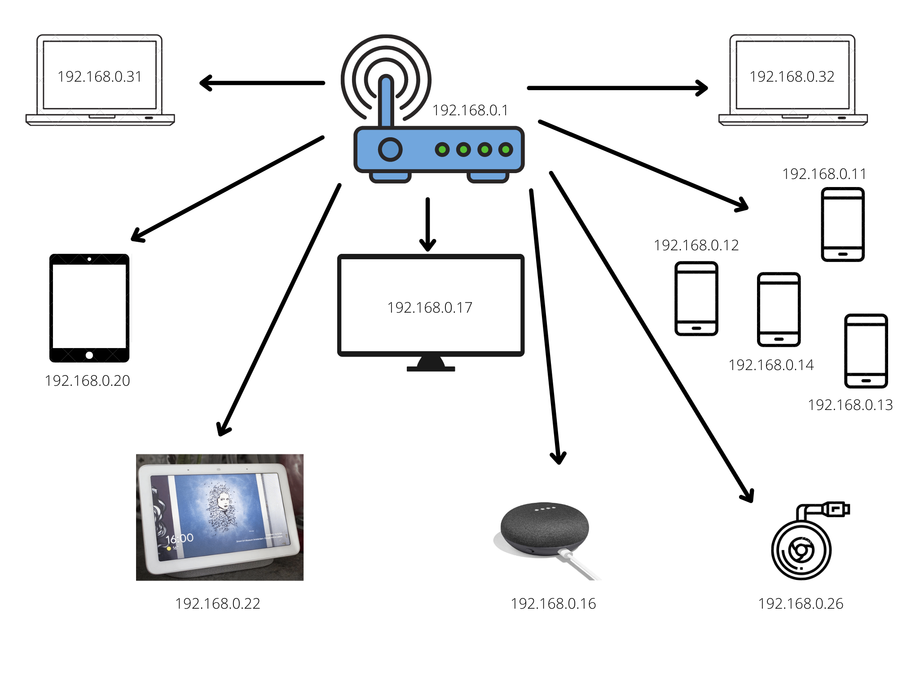
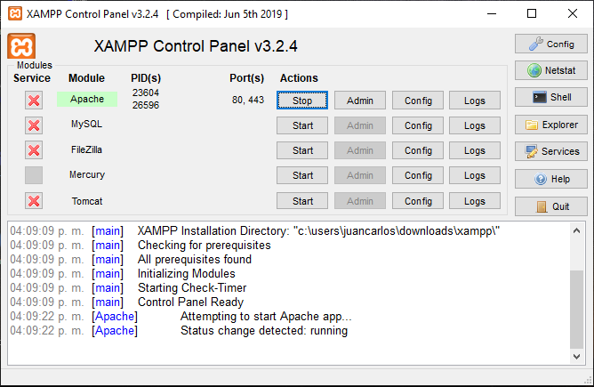
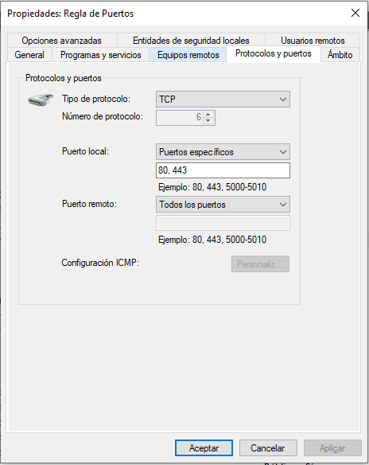

Configuración de Red Local |
Introducción |
|
Las Redes Locales en la actualidad tienen una gran importancia. Éstas permiten compartir datos y recursos entre los dispositivos conectados en ella; pocos son los espacios que en hoy en día no cuentan con una Red Local e, identificar, conocer y aprender a configurarlas nos permite comprender su importancia en la comunicación entre dispositivos. |
Objetivos |
Objetivo generalConocer, investigar e identificar los pasos para configurar una red local y el acceso a recursos de un equipo en red. Objetivos específicos- Identifica la IP de acceso de la red de tu router y accede a su ruta de configuración. - Elabora un mapa de accesos de equipos y sus respectivas IPs en la Red. - En tu computadora instala Xampp para configurar un servidor local, habilita los servicios de Apache y monta un sitio web. - Habilita el acceso al puerto 80 desde el firewall del equipo configurado como el servidor local. - Comprueba el acceso al sitio web montado en el servidor local desde 3 dispositivos distintos. |
Marco teórico |
|  |
Red LANLAN son las siglas de "Local Area Network", es decir, Red de área local. Una Red LAN conecta diferentes ordenadores en un área pequeña, como un edificio o una habitación, lo que permite a los usuarios enviar, compartir y recibir archivos. Un sistema de redes LAN conectadas mediante líneas telefónicas se denomina WAN "Wide-Area Network", es decir, es una red de área ancha. Cada ordenador individual conectado a una LAN se denomina "nodo", el cual tiene su propia CPU. |
RouterLos routers guían y dirigen los datos de red mediante paquetes que contienen varios tipos de datos, como archivos, comunicaciones y transmisiones simples como interacciones web. No obstante, un router no solo sirve para la transmisión de datos o las conexiones a Internet. La mayoría de los routers permiten conectar discos duros y usarlos como servidores de uso compartido de archivos, o impresoras a las que pueden acceder todos los usuarios de la red. |
 |
Desarrollo |
|
Se identificó el IP del router por medio de la configuración avanzada del acceso Wi-Fi, el cual es 192.168.0.1 y se accedió por medio del navegador a su ruta de configuración. Posteriormente, se realizó un mapa con los dispositivos conectados a esta Red, colocando sus respectivos IPs.  Una vez instalado Xampp, se habilitaron los servicios de Apache y en la ruta "Xampp > htdocs" se montó el sitio web que se estuvo trabajando en clase.  A continuación, se habilitaron los puertos 80 y 443 creando una regla llamada "Regla de puertos" desde las reglas de entrada del firewall del equipo.  Finalmente se comprobó el acceso al sitio web desde 3 dispositivos distintos, los cuales se conectaron a la misma red. |
Conclusiones |
|
Los resultados obtenidos en la realización de los objetivos específicos fueron satisfactorios y completos, excepto la comprobación de dispositivos, pues solamente se tuvo acceso en dos de ellos, sin embargo, el objetivo general, conocer, investigar e identificar los pasos para configurar una red local se logró completamente; además, el acceso y reconocimiento de las IPs conectadas a la red fueron obtenidos del correcto ingreso a la red. |
Referencias |
|
[1] CISET. (s.f). Red LAN - Local Area Network. Recuperado de: https://www.ciset.es/glosario/472-red-lan [2] Cisco. (s.f). ¿Qué es un router? Recuperado de: https://www.cisco.com/c/es_mx/solutions/small-business/resource-center/networking/what-is-a-router.html |